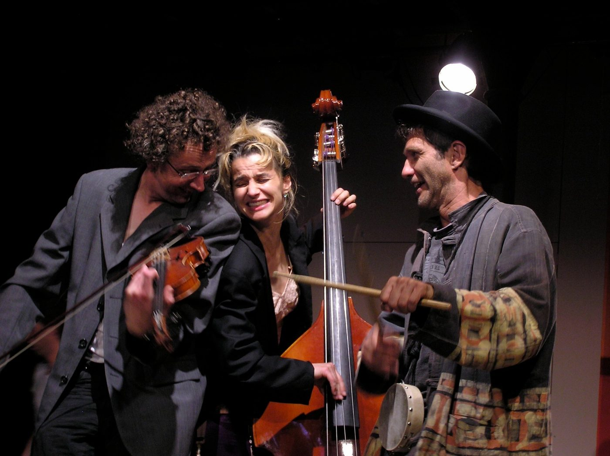
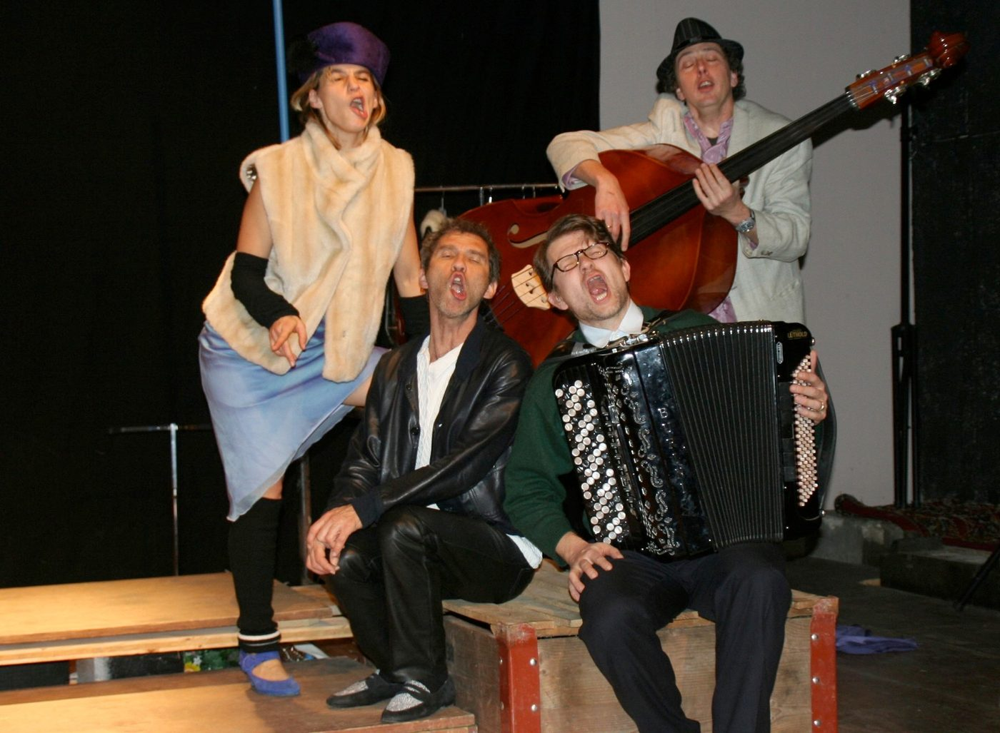
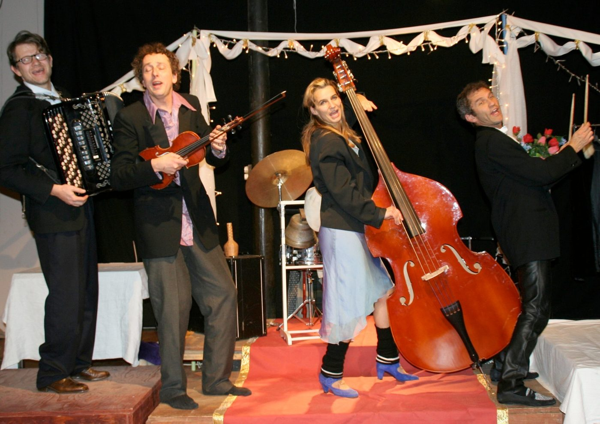
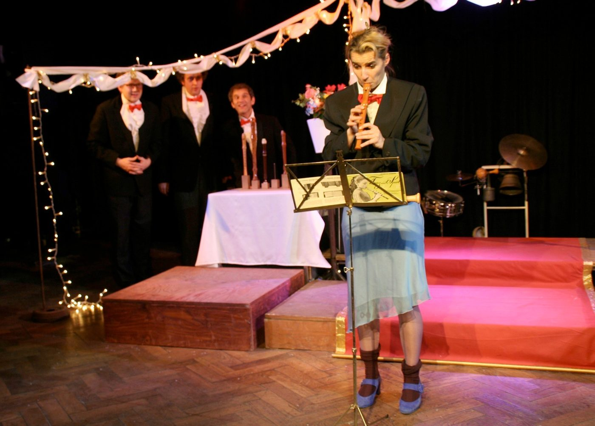
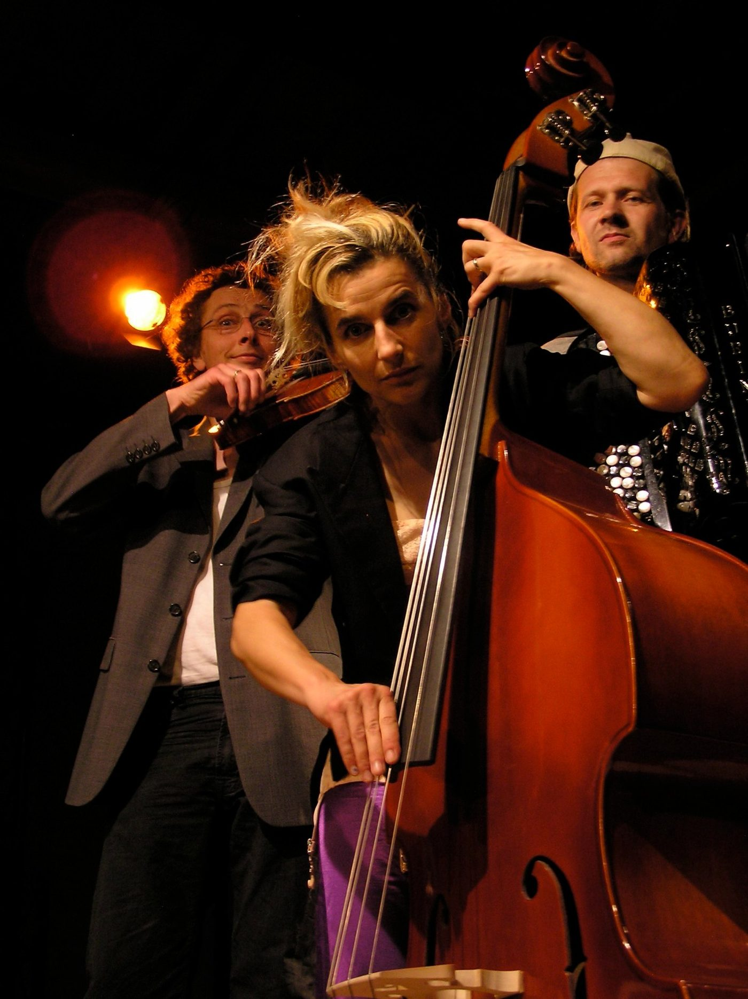

Beim «Fest» stehen die Musik und die Freude am Musizieren im Mittelpunkt des Geschehens. Das Stück dreht sich – als eine Art modernes Märchen von den Bremer Stadtmusikanten – um vier Musiker, die ihre «Karriere» auf der Strasse begonnen haben. Nun spielen sie zum täglichen Brotverdienst auf fröhlichen Hochzeiten und lärmigen Geburtstagsfeiern zum Tanz auf. Dabei bleiben sie selbst inmitten des Festtrubels aussen vor. Doch auch ihre Geschichten sind es wert, erzählt zu werden.
Die von Ruedi, dem akkuraten Akkordeonisten, der früher einen Chor geleitet hat, jedoch unversehens zum «Gründer» eines nach und nach wachsenden Strassenmusikensembles wurde. Die von Joe, der als Lebkuchenherzverkäufer entlassen wurde und seine marktschreierischen Fähigkeiten neu als Werber und Perkussionist für die Gruppe einsetzt. Die von Sava, dem schweigsamen Violinvirtuosen, der sein einsames Schicksal durch die Aufnahme in die Band-Familie vergisst und zur Freude am Geigenspiel zurückfindet. Und die von Marlene, einer ehemaligen Ballerina, die über Umwege zur Musik kommt, weil sie fürs Tanzen zu alt geworden ist.
Zwischen Tangos, Walzern und Tziganes rollen die vier Aussenseiter vor den Zuhörern ihre Bandbiografie auf, erzählen von ihren Beobachtungen am Rande der Fest-Rituale und erkennen dabei einiges über ihre Beziehungen untereinander. Das Konzert verselbständigt sich zum Theater, wird zur komödiantischen Fabel über Individualisten im Spannungsfeld von Schicksal und Glück, Dur und Moll.
«Die Produktion beeindruckt durch poetische Schlichtheit und Einfallsreichtum. Mit einfachsten Mitteln wird die Bühne von einer Minute auf die andere von der Bahnhof-Unterführung zum festlich dekorierten Hochzeitssaal.» Angie Ackermann, Solothurner Tagblatt, 15.1.2007
«Das Fest ist in erster Linie ein Fest der Sinne, da unglaublich witzig, dort tief traurig, immer berührend.» Beat Vogt, Luzerner Autor
- Spiel
- Franziska Senn, Roland Kneubühler, Reto Baumgartner, Ueli Blum
- Musik
- Albin Brun
- Regie
- Ueli Blum, Adrian Meyer
- Ausstattung
- Valérie Soland
- Licht
- Martin Brun
- Produktionsleitung
- Eva Batz-Deschler





